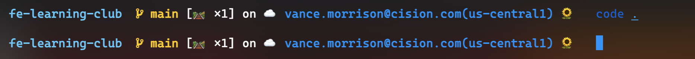

A sunflower, a tall, round flower with large yellow petals. Depicted as a single, vertical sunflower with a large, dark-brown center on a green stem. Commonly used for Mother's Day and other special occasions. May be more generally used to convey such sentiments happiness and love. Also used as a yellow accent color and in association with summer and farming.
I am a big of flower, and I think the sunflower is one of the prettiest. I like to use the sunflower as a sign of success/availability, for example:
As a sign of availability in slack
A sign of a successful command in my terminal
